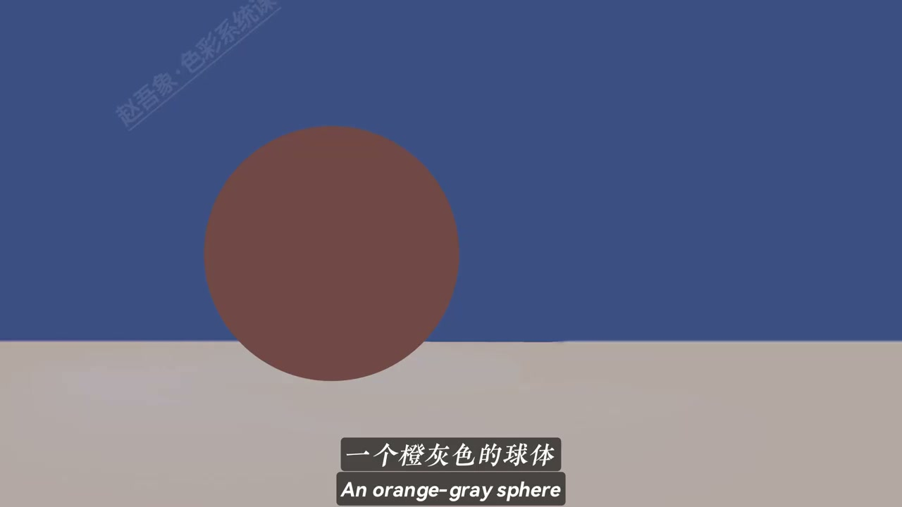
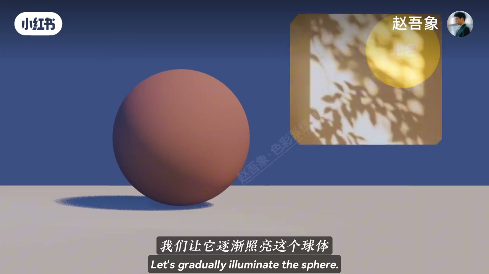
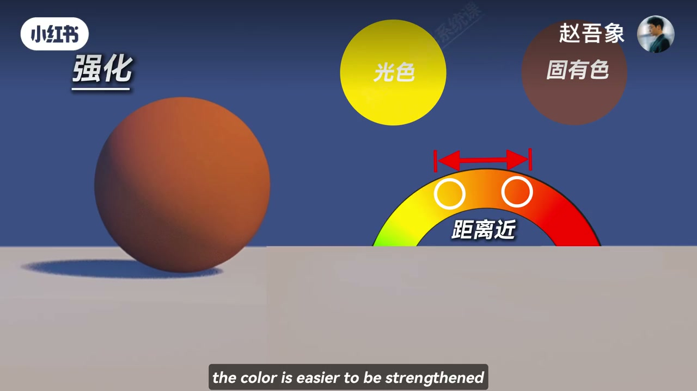
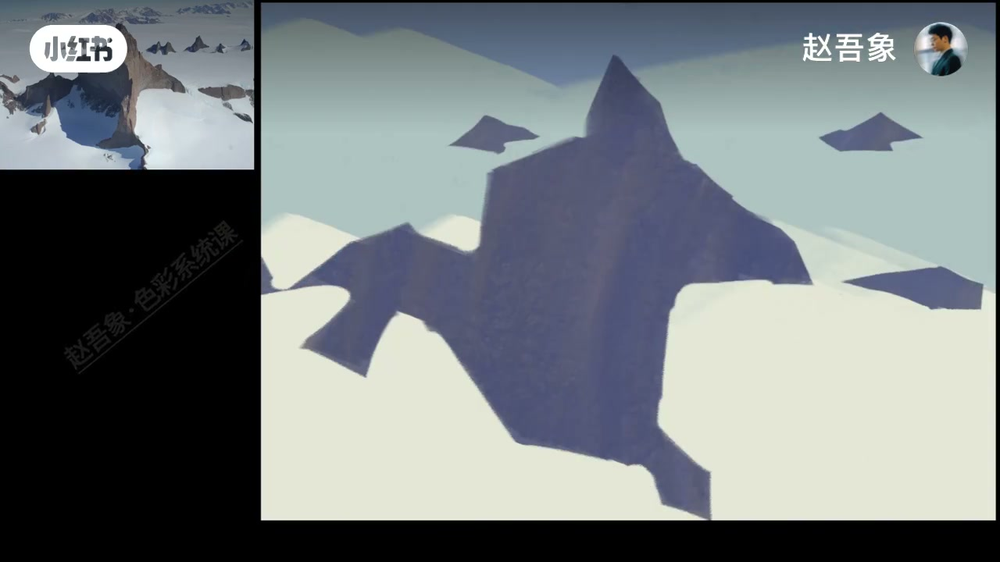
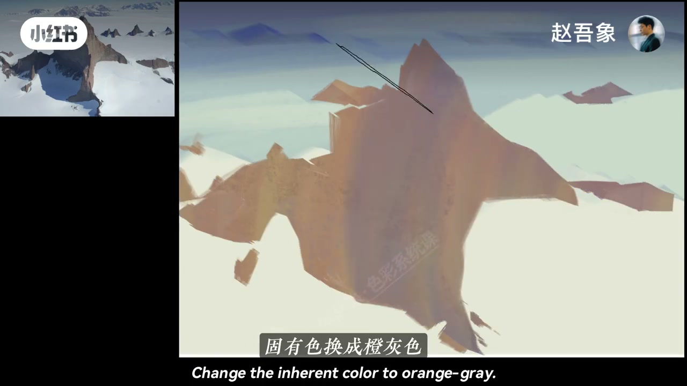

内容要点
赵吾象用球体实验与大师例证回答：亮部颜色由什么决定？中性光下亮部只是明度提高；现实光常有色彩倾向。关键规律是——光色与固有色接近时颜色被强化变纯，距离远时固有色被削弱变灰。亮部不是简单加白，而是两者共同作用；暗部留待下期。
知识结构
中性光只提明度；暖阳让橙灰球亮部变鲜橙黄；蓝球也变暖但变灰。
光色≈固有色→变纯（佐恩红裙）；距离远→变灰（索罗拉蓝衣亮部画灰更真实）。
蓝灰岩暖亮发灰（相抵消）；换成橙灰则暖且更纯。收束：亮部≠加白。
画亮部先问光色与固有色的距离：近则提纯强化，远则画灰更真。加白只提明度，解决不了「像不像光」。
00:00-00:38实验：中性光提明度，暖光改亮部色相
设问「亮部的颜色到底是有什么决定的」后，先放一个橙灰色球体（画面字幕；ASR「成灰色」）。光线无明显色彩倾向时，亮部只是明度提高。但现实光常有倾向——下午暖阳逐渐照亮球体，亮部变成很鲜艳的橙黄色。
先不解释，换成蓝球：结果也变暖，但这次是变灰了。00:05／00:20 提供球体与暖阳投影小窗，是整条原理的感性入口。


00:38-01:02结论：接近变纯，远离变灰
正式结论：当光色和固有色接近时，颜色更容易被强化而变纯——佐恩（ASR「左恩」）笔下的红裙子就是这个道理。当两者距离较远时，固有色更容易被削弱而变灰；索罗拉把蓝色衣服的亮部画灰，反而更真实。
00:45 图解用「光色」黄圆、「固有色」棕圆与色环「距离近」箭头，把「强化」可视化。

01:02-01:45实操：蓝灰岩发灰、橙灰岩更纯；亮部≠加白
蓝灰色岩石亮部受暖光直射：变亮同时发暖，但会发灰，因为固有色和光色相抵消，却得到既有光感又真实好看的变化。把岩石固有色换成橙灰色后，光色与固有色接近，亮部暖的同时纯度更高。
收束金句：「亮部不是简单的加白，而是光色和固有色共同作用的结果。」暗部规律留到下期。01:08／01:26 雪峰写生对照是可跟练的步骤证据。


完整转录（45段）
以下文本由 Whisper medium 模型自动转录，可能存在少量识别误差，已尽可能修正。
亮部的颜色到底是有什么决定的
来 我们做个实验
这是一个成灰色的球体
当光线没有明显色彩倾向的时候
亮部呢 只是明度的提高
但现实中的光啊
往往都有一定的色彩倾向
比如 下午的暖阳
我们让它逐渐照亮这个球体
你看 亮部变成了很鲜艳的橙黄色
这是为什么
先不解释
我们换个蓝球试试
结果呢 也是变暖
但这次是变灰了
所以我们可以得到一个结论
当光色和固有色接近时
颜色更容易被强化而变纯
你看左恩笔下的红裙子
就是这个道理
当两者距离较远时
固有色更容易被削弱而变灰
你看索罗拉把蓝色衣服的亮部化灰
反而看起来更真实
好 原理掌握
我们来实操一下
这是一块蓝灰色的岩石
亮部受暖光直射
变亮的同时发暖
但是会发灰
因为固有色和光色相抵消
得到了这种既有光感
又真是好看的色彩变化
同样 我们把岩石的固有色
换成橙灰色
光色和固有色接近
所以亮部暖的同时
纯度更高
所以你看
亮部不是简单的加白
而是光色和固有色
共同作用的结果
那暗部颜色又有什么规律呢
我们下期来细讲
拜拜